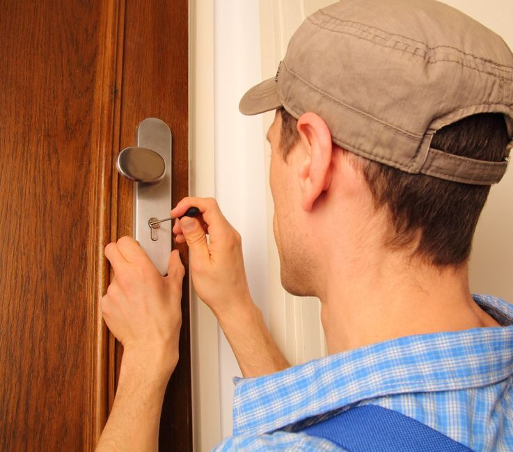
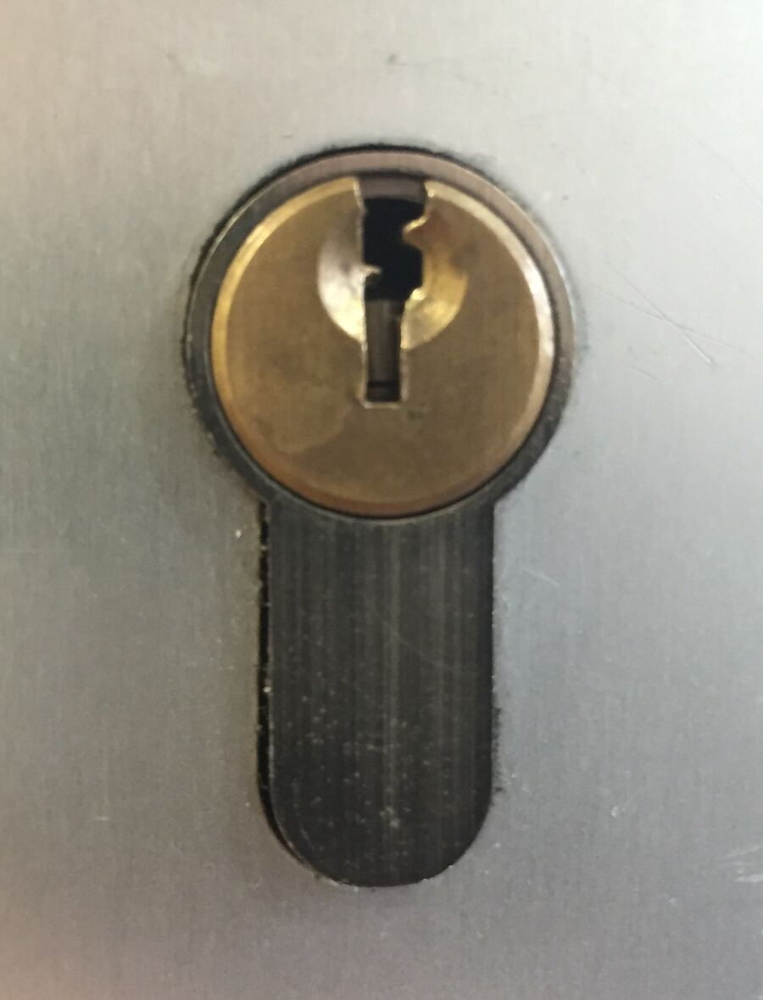
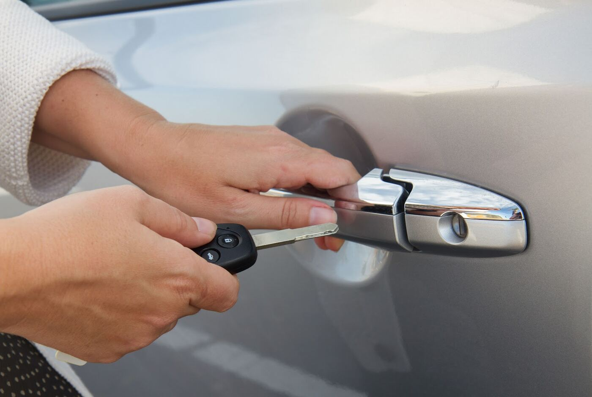
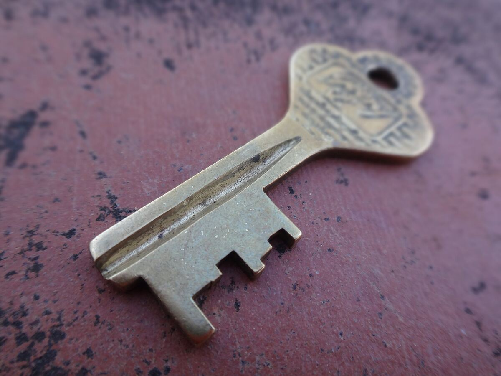
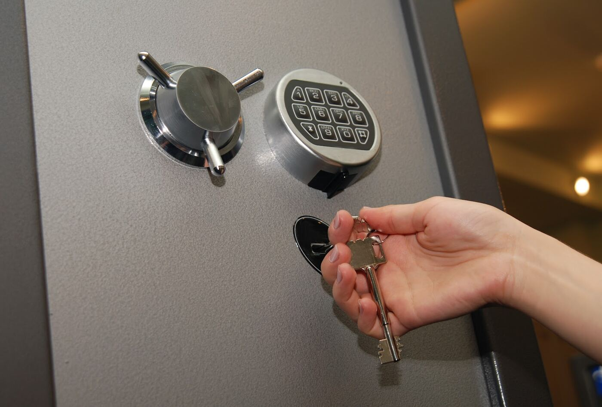

פריצת דלתותDoor opening
דלת שנטרקה, או מפתח שנשאר בפנים.A door that slammed shut, or keys left inside.
קונספט לדוגמה שנבנה עבור ניר כהן - מנעולן בחיפה · זה אינו האתר הרשמי של העסקA sample concept built for Nir Cohen – Locksmith in Haifa · This is not the business’s official website
התקנה והחלפה של כל סוגי המנעולים.Installing and replacing every kind of lock.





תמונות להמחשה, מתמונות העסק בגוגל ומאוספים פתוחיםIllustrative photos, from the business’s Google listing and open collections
פריצת דלתות, התקנה והחלפה של מנעולים לבית, לרכב ולכספת. חיפה, הקריות והסביבה.Door opening, plus lock installation and replacement for homes, cars and safes. Haifa, the Krayot and around.
דלתות, צילינדרים, רכבים וכספות. מהאתר של ניר ומהביקורות.Doors, cylinders, cars and safes. From Nir’s own page and his reviews.
דלת שנטרקה, או מפתח שנשאר בפנים.A door that slammed shut, or keys left inside.
צילינדר חדש לדלת הבית.A new cylinder for the front door.
פתיחה, התקנה והחלפה של מנעולי רכב.Opening, installing and replacing car locks.
התקנה והחלפה של מנעולי כספות.Installing and replacing safe locks.
בוחרים, וההודעה נחרטת על השלט.Choose, and the message is engraved on the plate.
ההודעה נפתחת בוואטסאפ, ואפשר לשנות אותה לפני השליחה.The message opens in WhatsApp, and you can edit it before sending.
ניר כהן מקצוען אמיתי. אדיב והגון. נעים הליכות. נקרא בשישי בצהריים והגיע מיד ופתר בסבלנות אין קץ ובמקצועיות רבה את הבעיה. מי ייתן וירבו בעלי מקצוע כמותו
Nir Cohen is a true professional. Courteous and decent, pleasant to deal with. Called on a Friday at noon, he came right away and solved the problem with endless patience and great skill. May there be more tradesmen like him.
הזמנתי את ניר להחלפת צילינדר בדירה, הגיע בחור מחויך עם שירות ברמה הגבוהה ביותר! המחיר היה מצוין ובוודאות אעזר בו בהמשך! מומלץ בחום!
I called Nir to replace a cylinder in my flat. A smiling guy arrived, with service of the highest level! The price was excellent and I’ll certainly use him again! Warmly recommended!
הזמנתי את ניר המנעולן, שהגיע תוך זמן קצר ביותר. הגיע בחור מנומס ונעים. ניגש לתקלה במיומנות ומקצוענות וגבה מחיר הוגן. ממליצה בחום על שירותיו.
I called Nir the locksmith, who arrived very quickly. A polite, pleasant guy. He handled the fault with skill and professionalism and charged a fair price. I warmly recommend him.
אין אין אין ואין עלייך. מיד ענית. מקצועי ענייני והוגן בחול המועד. פתרת במהירות. תודה רבה רבה רבה
There’s no one like you. You answered right away. Professional, to the point and fair, during the holiday week. You solved it fast. Thank you so, so much.
מדובר במנעולן מקצועי, אמין. ומומלץ כבעל מקצועה. יישאר כוח
A professional, reliable locksmith. Recommended as a tradesman. More power to you.
חיפה, הקריות, טבעון, יקנעם, עכו, נשר וטירת כרמל.Haifa, the Krayot, Tivon, Yokneam, Akko, Nesher and Tirat Carmel.
התקנה והחלפה של כל סוגי המנעולים, בבתים, ברכבים ובכספות, וגם פריצת דלתות.Installing and replacing every kind of lock, in homes, cars and safes, and opening doors too.
כן, אפשר לשלם בכרטיס אשראי.Yes, credit cards are accepted.
ראשון עד חמישי 7:00–22:00, שישי 7:00–16:00. בשבת סגור.Sunday to Thursday 7:00–22:00, Friday 7:00–16:00. Closed on Saturday.